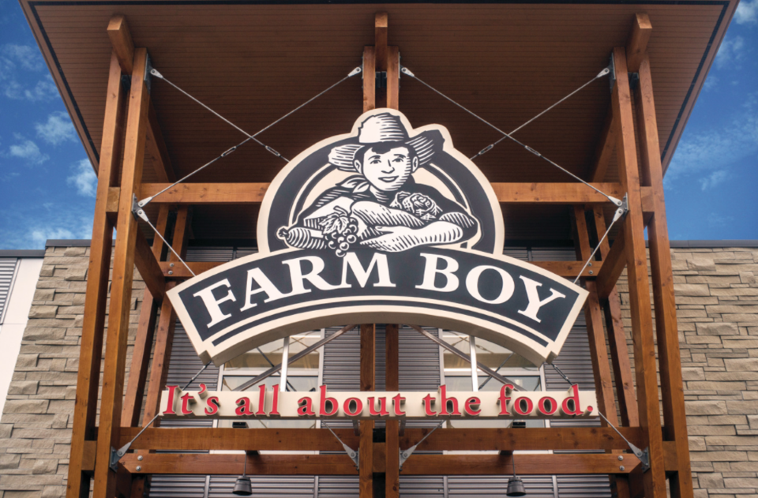
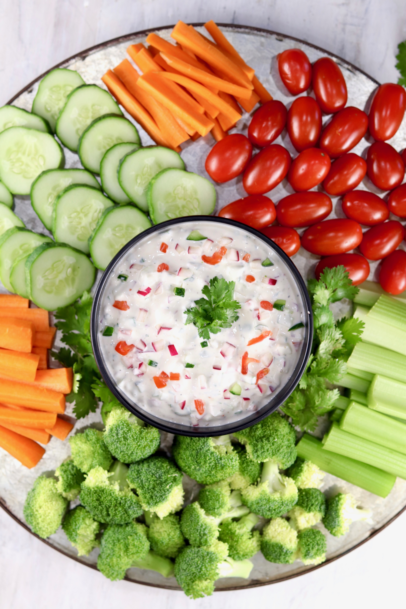

Part 3
Company and Country Profile
This section shows if Farm Boy and this product are strong enough in Canada to support a move into Vietnam.
Part 3 Recommendation
Yes, based on this section, I would recommend the product for Vietnam. Farm Boy is a growing Canadian company with a strong brand, and the dip already fits its fresh and private-label image in Canada. The company also has support from Empire Company Limited, which makes the business feel more stable and capable of trying a new market. The dip already has a clear identity in Canada as a fresh and easy snack product, which gives Farm Boy a better starting point than launching a weaker product. Farm Boy is still mostly domestic, so it should enter Vietnam through a small test launch with local partners instead of trying a large expansion right away.


Main idea
Farm Boy already sells the product in a market where people know the brand, and the product has a clear identity as a fresh, easy snack dip. That does not guarantee success in Vietnam, but it gives the company a better starting point than launching a weak or unknown product.
Slide Deck